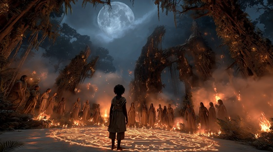

In the ancient Dausi epic, Naa Gbewaa is not only born of divine power — he is called into destiny by the spirits of his ancestors. In Dagomba belief, the dead do not depart; they guide, guard, and command the living.
When the time comes for a leader to rise, it is not man who decides, but ancestral memory itself. The Call of the Ancestors is a sacred moment in which a child hears the voices of those who ruled before — through dreams, omens, and the pulse of ceremonial drums.
Women play a vital role in this summoning: through chant, ritual, and possession, they serve as conduits for the old spirits. Their voices become the wind between the trees, the cry of fire, the echo of thunder. It is through them that the new king awakens — not through conquest, but through acceptance of fate.
This moment marks Gbewaa's true transformation from child to chosen, as Dagbon itself opens its soul to him.
The Call of the Ancestors
Night fell heavy on the sacred land,
Fire danced in the griot’s hand.
Through smoke and silence, they heard the song,
A name returned from ages gone.
Drums beat low in bones and sky,
The voices called — not asking why.
O Gbewaa, rise from dream and dust,
The spirits speak — in you they trust.
The line is yours, the crown, the flame,
The past has bled to give your name.
The women sang by sacred fire,
Their chants like wind through thorn and wire.
The spirits of the mountain wept,
For every king their blood had kept.
From shadowed groves, the whispers grew,
“Awake, child-king — we summon you.”
O Gbewaa, rise from dream and dust,
The spirits speak — in you they trust.
The line is yours, the crown, the flame,
The past has bled to give your name.
He stood alone, the fire behind,
The voices threading through his mind.
He saw the ghosts of kings in line—
The blade, the throne, the blood, the sign.
The earth beneath him breathed and moaned,
The soul of Dagbon claimed its own.
O Gbewaa, rise from dream and dust,
The spirits speak — in you they trust.
The line is yours, the crown, the flame,
The past has bled to give your name.
Rise, rise, child of storm and name—
The ancestors call through ash and flame.
They do not die, they do not sleep,
They wait in roots, they guard the deep.
And from the dusk a child came forth,
Eyes like stars, and skin like torch.
The drum still speaks in sacred tone—
The king has heard, and claims his throne.